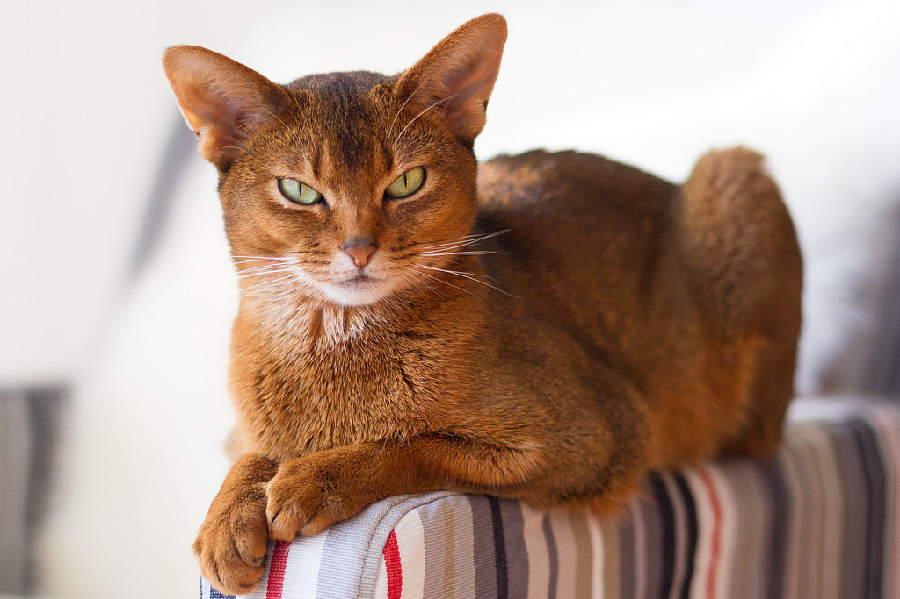
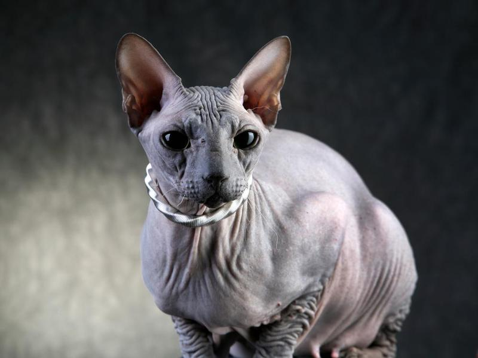
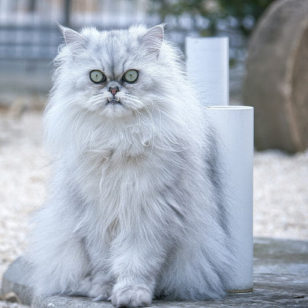
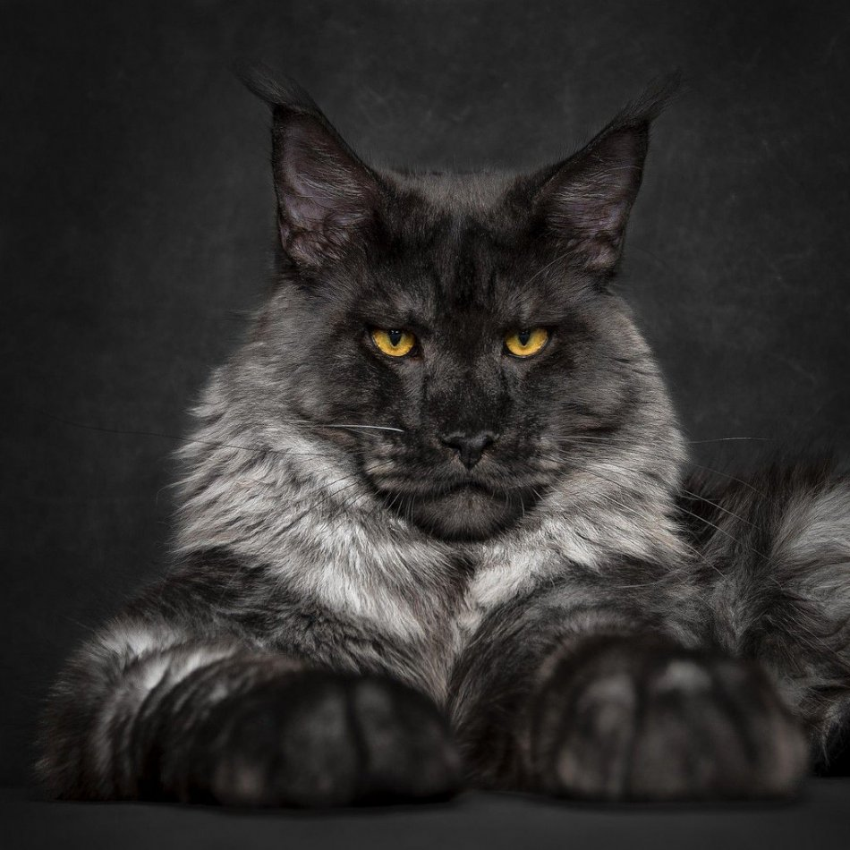

Абиссинки - это кошки с активной жизненной позицией, они проявляют живой интерес ко всему окружающему. Их темперамент прекрасно сбалансирован, и, по общему признанию, абиссинки являются удивительно гармоничными кошками во всех отношениях.
Абиссинкая кошка - необыкновенно умная, грациозная, исполненная сознания собственного достоинства и одновременно ласковая, любознательная и игривая.
Абиссинская кошка - верный и преданный друг, помошник во всех делах. Что бы Вы не делали, кошка обязательно будет находиться рядом, стараясь принять участие в происходящем.
Донские сфинксы - это молодая порода кошек. Они сразу же покорили всех своим неземным видом и замечательным характером, став очень популярной породой.
И неудивительно: ведь эти кошки обладают сплошными достсинствами. Все, что есть замечательного во всем кошачьем, присуще Дончакам.
Содержать эту породу кошек в домашних условиях - сплошное удовольствие. Слухи о трудностях, связанных с их содержанием, о их привередливости и болезненности - вздор! У них отличное здоровье.
Персы являются самой популярной породой на протяжении многих десятилетий.
Персидские кошки - самая многочисленная группа на выставках и постоянные лидеры в ежегодных рейтингах CFA (Американской Ассоциации Любителей кошек), да и в Европе они – самые известные и любимые.
Мейн-куны были выведены более 100 лет назад как крупная, выносливая и красивая порода кошек, хорошо выживаемая в условиях суровых зим. Только наиболее выносливые особи с сильно развитой мускулатурой получили возможность участвовать в дальнейшем разведении.
Мейн-куны развиваются медленно и достигают зрелости лишь к 4-5 годам. К этому возрасту вес самцов может достигать 15 кг, у самок - меньше. Это большие, нежные и добродушные гиганты. Даже голос выделяет их среди других кошек. Он имеет отчетливую яркую вибрацию. Мейн-куны редко мяукают, а лишь изредко нежно и коротко подают голос, что никак не соответствует их размерам.
Важными отличительными чертами мейн-кунов являются форма головы, тела и текстура шерсти. Голова слегка вытянута больше в длину, чем в ширину, со слегка изогнутым профилем и высокими скулами, уши большие и широкие у основания, высоко посаженные, хорошо опушенные внутри. Кисточки на ушах, похожие на рысиные. Шея средней длины, тело длинное, грудь широкая. Хвост такой же длины, что и тело.
